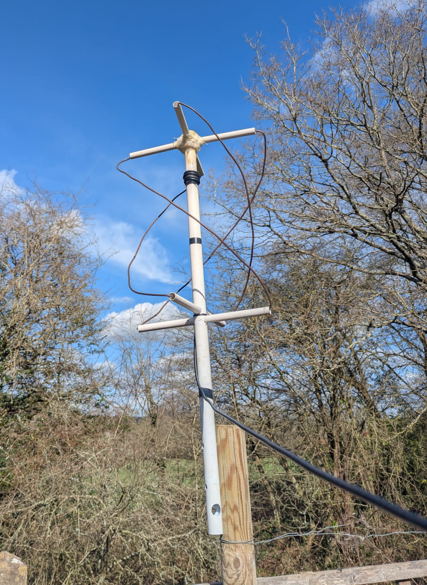
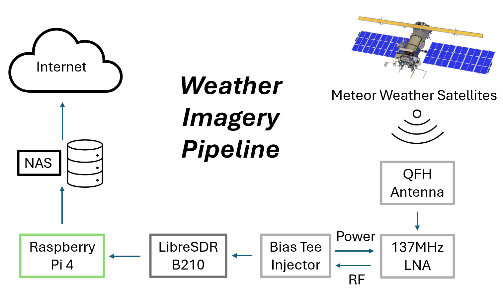

About
This project aims to provide regular, frequent images of weather and cloud conditions over Western Europe. This will help with identifying weather patterns and meteorology.
{kind=link}
{kind=link}
{kind=link}
An example of the output images from one pass. click for full image.
Transmitters
These images are captured from weather satellites, specifically the Russian Meteor-M 2-4 and 2-3 satellites. These satellites were chosen for this, as they both transmit a constant stream of LRPTLow Rate Picture Transmission: a low bit-rate data transmission standard, first used in 2006 data in the VHFVery High Frequency: 30-300MHz band. This frequency is very easy to recieve with an omnidirectional antenna, meaning a permanent recieving station is easy to maintain.
Reception Pipeline
The signals are transmitted at 137MHz, and recieved by an omnidirectional QFH (Quadrifilar Helix) antenna mounted ~3m above the ground.

The antenna used to recieve the data.
The signal is passed though a Bias Tee-powered Low Noise Amplifier, and then through ~30m of coaxial cable, until it reaches the reciever. The reciever is a LibreSDR B210 Software defined radio.
This SDR is connected to a Raspberry Pi running Satdump, a "generic satellite data processing software". This decodes and projects the images such that distortions and the edges of the frame is minimised - at the cost of some resolution.
The final images are saved to a NASNetwork Attached Storage, and will be made available to the public.

Future Plans
I plan to change the processing settings of Satdump, to get more control over the final images and make some timelapses. If this proves to be too difficult I may try and make my own decoder, I think this would be a good way to practice my programming skills.
Making a way to easily show changes in the clouds over time, like on weather apps, and have some amount of analysis would also be an interesting endeavour.
I would like to get higher-resolution imagery, so I'm trying to make an L-Band recieving setup, but that's work in progress right now.
Limitations
One major drawback of this system is that the satellites are in a sun-synchronous orbitA type of Low Earth Orbit, inclined such that the satellite passes over the same part of the planet at the same time every day., meaning they only pass overhead twice a day, 12 hours apart. Because of this, there are large periods (6+ hours) where no imagery is available.
Another is that due to the decomissioning of the United States' POESPolar Orbiting Environmental Satellites: NOAA's old satellite fleet, replaced by JPSS. satellites in late 2025, the Meteor Satellites are currently the only two to transmit on the VHF frequency band. This is because it is a low frequency, with a low bandwidth, so only a low data-rate can be achieved. In this case LRPT is only 80kbps.
The low data rate of LRPT means that only 3 colour channels can be transmitted. Whilst these channels are useful to produce false colour images, they are all of wavelengths in the visible spectrum, meaning that the images are black during the night. And so all of the night passes of the satellites are useless for cloud-cover observation.